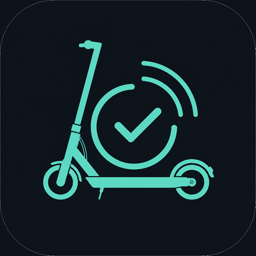

E-Scooter prüfen.
Nur lesen — nie ändern.
Bluetooth-Diagnose für Ninebot und Xiaomi: Manipulation erkennen, PDF-Protokoll speichern. Kein Tuning, kein Unlock, kein Flash.
Drei Schritte. Fertig.
Vom BLE-Scan bis zum Protokoll — alles bleibt auf dem Gerät.
-
01
Scooter suchen
ScooterCheck listet BLE-Geräte in Reichweite — auch solche, die unter iPhone-Einstellungen → Bluetooth nicht auftauchen.
-
02
Manipulation prüfen
Nach dem Handshake liest die App Register aus und vergleicht Auslesewerte mit den Sollwerten des gewählten Profils.
-
03
Bericht speichern
Ergebnis als PDF und JSON exportieren — für Akte, Händler oder die eigene Dokumentation. Offline auf dem iPhone.
Was die App bewertet
Jeder Fakt zeigt Auslesewert, Sollwert, Bewertung und Erläuterung — im gleichen Teal-Dark-Look wie die App.
- Geschwindigkeitslimit Soll D 20 / E 25 km/h je Marktvariante
- Seriennummer & Profil Zuordnung zu werkseitigen Präfixen und Modellfamilie
- Firmware-Hinweise Auffälligkeiten gegenüber typischen Stock-Ständen
- Protokoll-Export PDF-Bericht plus maschinenlesbares JSON
Unterstützte Modelle
BLE-Stack wird automatisch erkannt (Ninebot Enc2 / Xiaomi). Das Profil steuert Sollwerte und Versuch-Reihenfolge.
- Ninebot ZT3 Pro
- Ninebot Max G30
- Ninebot Max G3 / MAX3
- Ninebot F-Serie
- Ninebot D-Serie
- Xiaomi M365 / Pro 2
- Xiaomi Scooter 3 / 4
Hinweis: Neuere Xiaomi-Modelle mit 55 AB sind ggf. nicht auslesbar.
Nur Diagnose. Nie Eingriff.
ScooterCheck ändert keine Limits, flasht keine Firmware und kennt keine Unlock-Kombos. Die Verbindung dient ausschließlich dem Auslesen und Dokumentieren.
Kurz erklärt
Die wichtigsten Punkte zur Infoseite und zur App.
Brauche ich einen Mac?
Nein. Die App läuft nativ auf dem iPhone. TestFlight-Builds kommen aus der Cloud (GitHub Actions / Codemagic).
Wo werden Protokolle gespeichert?
Offline auf dem Gerät. Du kannst PDF und JSON per AirDrop oder Teilen weitergeben.
Warum sehe ich den Scooter nicht unter Bluetooth?
Viele Scooter erscheinen nicht in den iOS-Bluetooth-Einstellungen. Tippe in der App auf „Scooter suchen“ — ScooterCheck listet BLE-Geräte direkt.
Ändert die App etwas am Scooter?
Nein. Es gibt keine Limit-Änderungen, kein Firmware-Flash und keine Unlock-Funktionen.

ScooterCheck auf dem iPhone
Native SwiftUI-App mit Core Bluetooth. Bundle-ID
com.scootercheck.app.